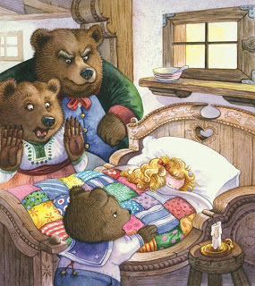

Little Red’s gluttony got the best of her after eating 3 bear-sized portions of porridge and falls into a deep slumber. To their shock, when the homeowners return to their cottage, they find a small unawakenable white woman. Mistaking her for Sleeping Beauty they call up Prince Phillip to collect her. Little Red was never seen again.